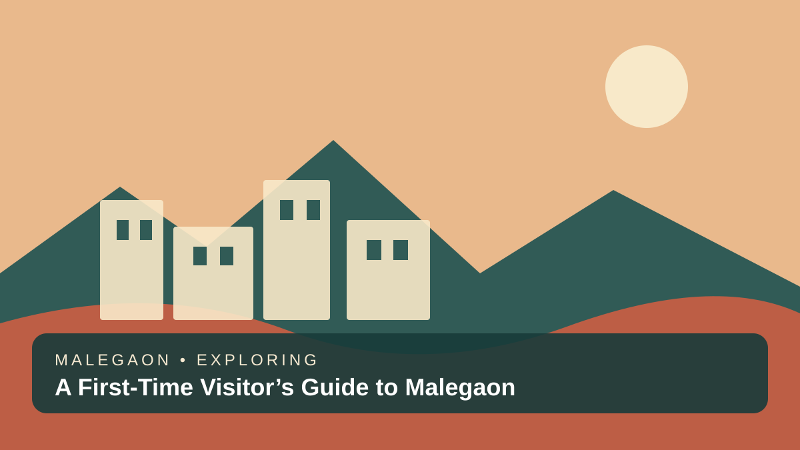
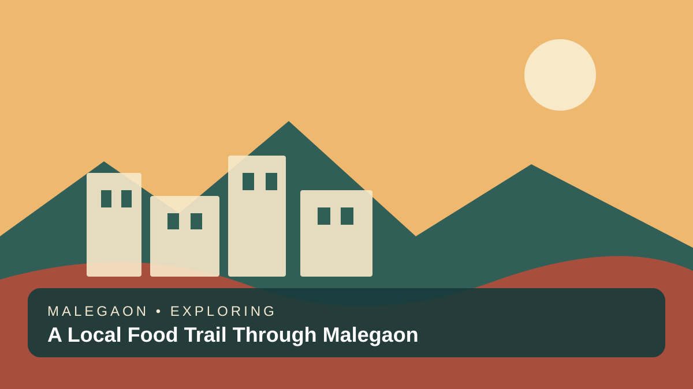
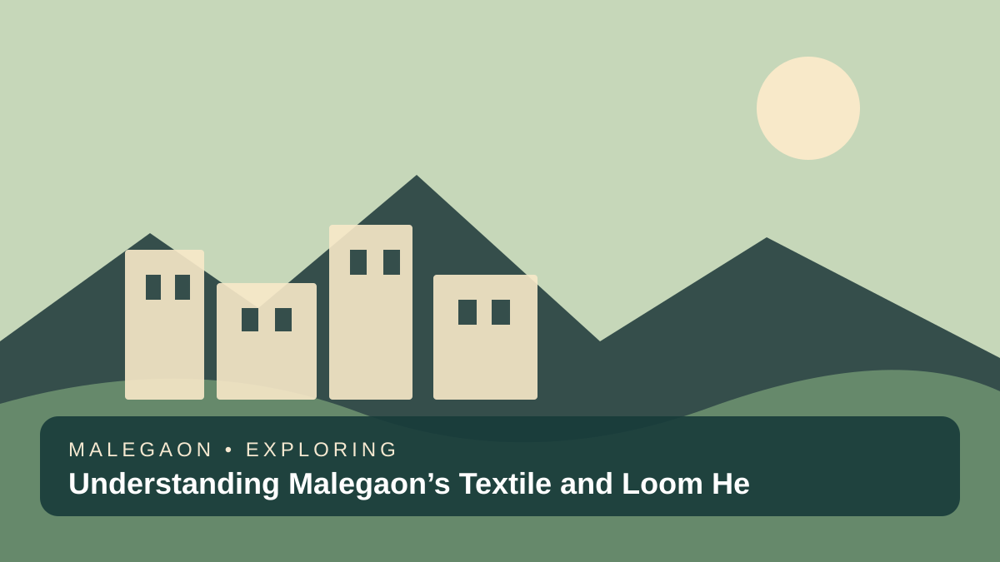
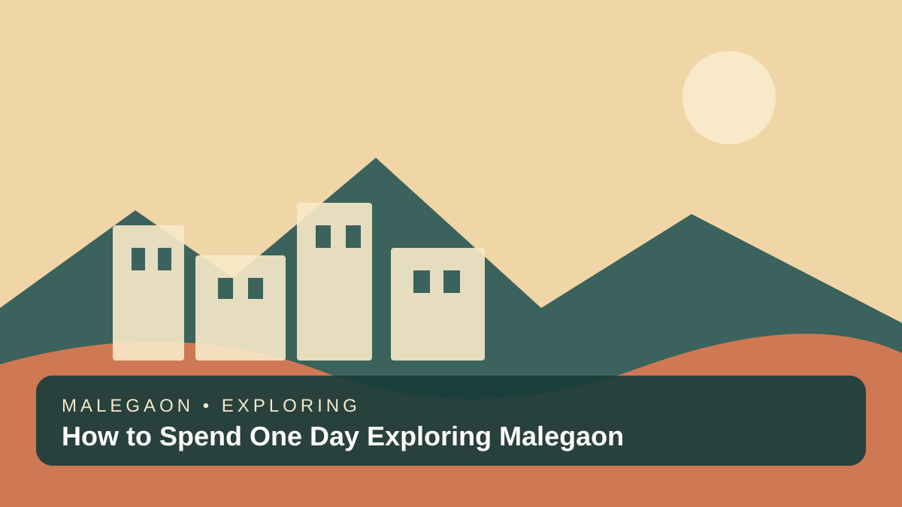
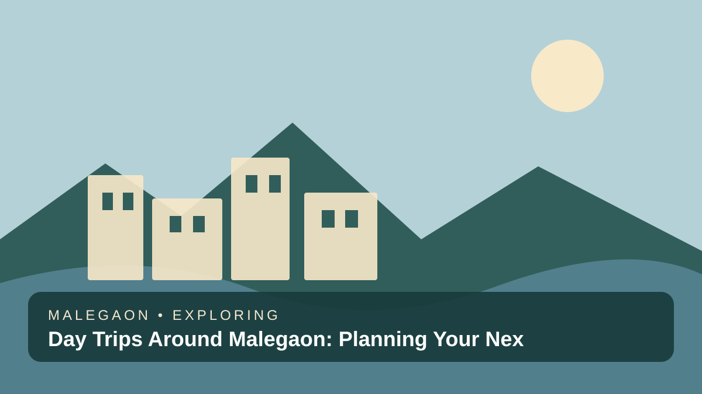
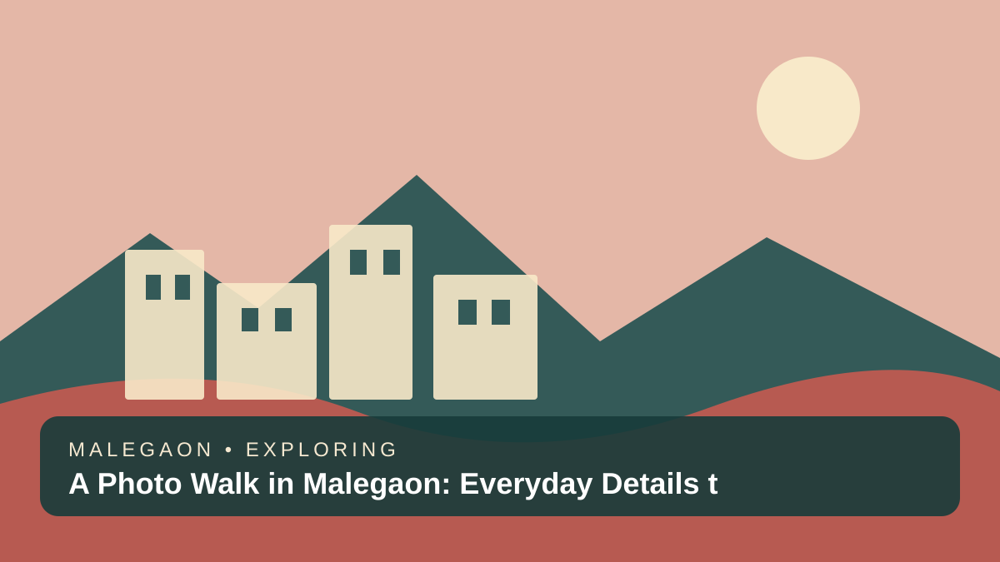
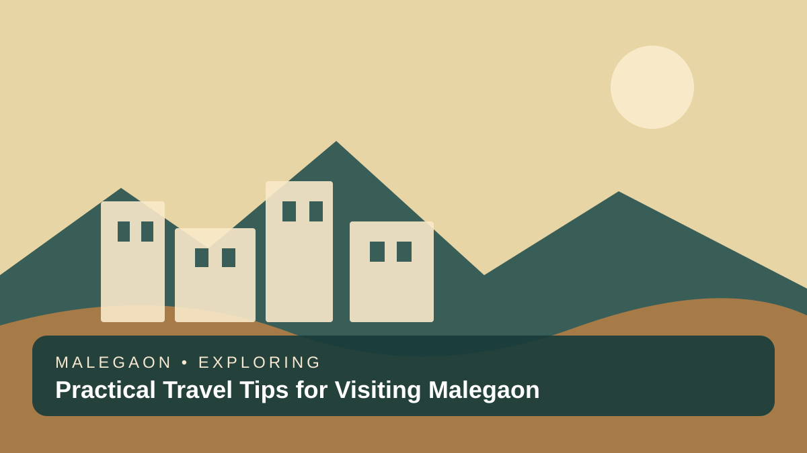
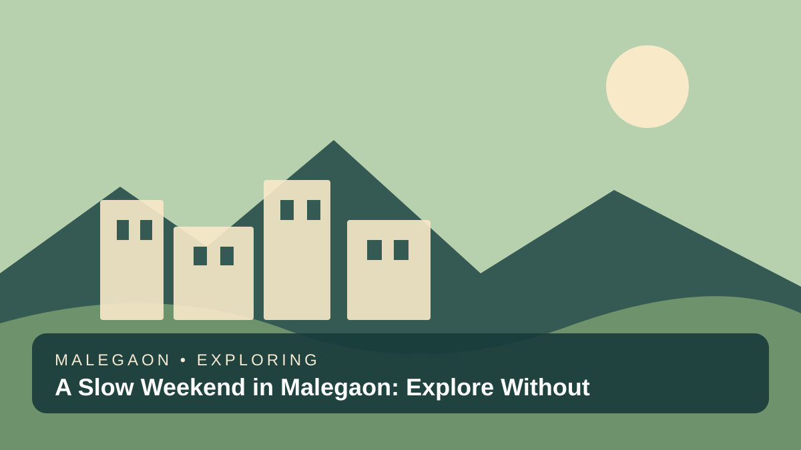

City Guide
A First-Time Visitor’s Guide to Malegaon
Get to know Malegaon, Maharashtra, with practical ideas for exploring its streets, local culture, food, and everyday life.
Read story →Explore the city’s everyday character through local food, market walks, textile heritage, thoughtful itineraries, and practical travel tips.
Explore the guides ↓
Local culture, practical tips, and slow travel.
Get to know Malegaon, Maharashtra, with practical ideas for exploring its streets, local culture, food, and everyday life.
Read story →
A simple guide to exploring Malegaon’s market areas respectfully, finding local essentials, and enjoying the city’s everyday atmosphere.
Read story →
Explore Malegaon’s food scene with a curious appetite, practical hygiene tips, and ideas for discovering local favourites.
Read story →
Learn how to explore Malegaon’s textile identity with curiosity, respect for workers, and an appreciation for local craftsmanship.
Read story →
Make the most of a day in Malegaon with a relaxed itinerary built around local streets, food stops, markets, and cultural discovery.
Read story →
Use Malegaon as a starting point for a wider North Maharashtra trip, with advice for checking routes, opening times, and travel conditions.
Read story →
Plan a thoughtful photo walk in Malegaon and learn how to photograph streets, textures, architecture, and everyday scenes respectfully.
Read story →
Prepare for a smoother visit to Malegaon with tips for transport, weather, clothing, cash, connectivity, and respectful local travel.
Read story →A practical guide to local etiquette in Malegaon, from photography and dress to market behaviour and conversations with residents.
Read story →
Build a relaxed weekend in Malegaon around food, local markets, textile heritage, and unhurried walks through the city.
Read story →